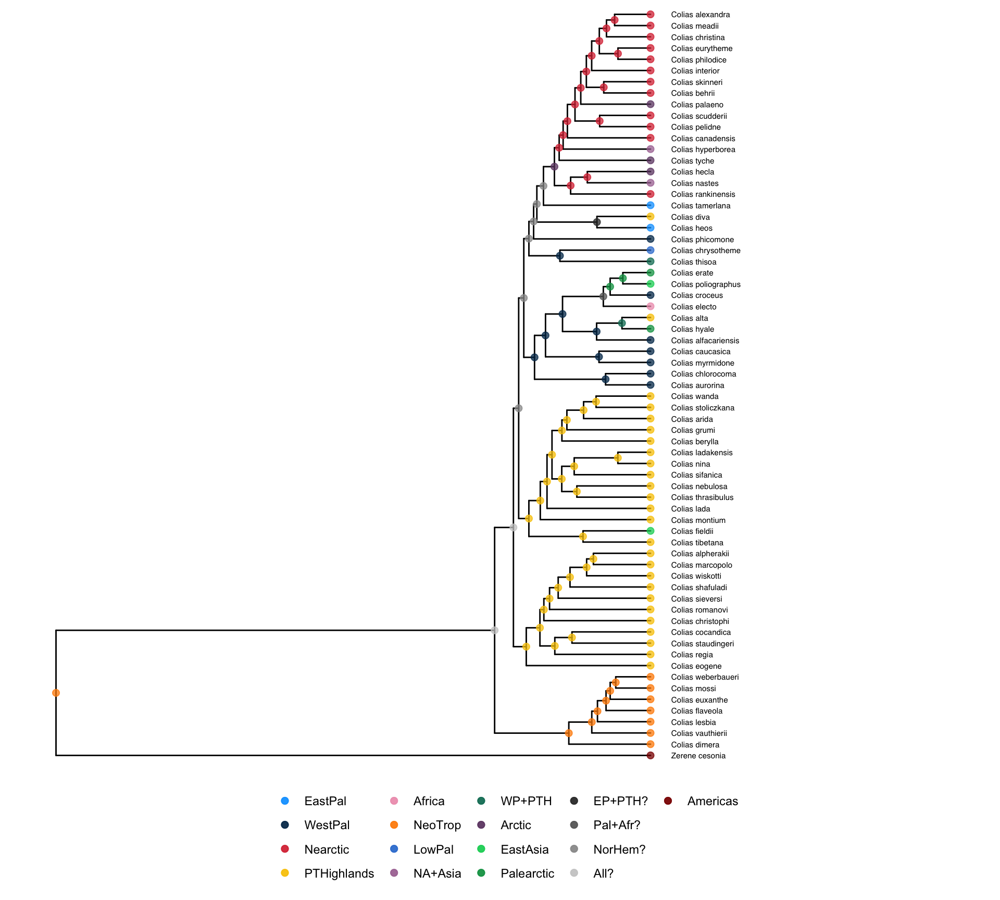

Show the code
library(RevGadgets)
library(tidyverse)
library(ape)
library(sf)
sf::sf_use_s2(FALSE)
library(here)Packages
library(RevGadgets)
library(tidyverse)
library(ape)
library(sf)
sf::sf_use_s2(FALSE)
library(here)Plot the regions and their colors.
bioregions <- st_read(here("biogeography/data_ignore/bioregions.geojson"))Reading layer `bioregions' from data source
`/Users/mari/repos/colias_hostrep/biogeography/data_ignore/bioregions.geojson'
using driver `GeoJSON'
Simple feature collection with 7 features and 1 field
Geometry type: MULTIPOLYGON
Dimension: XY
Bounding box: xmin: -180 ymin: -55.9795 xmax: 180 ymax: 83.6236
Geodetic CRS: WGS 84palette_fill <- c("NT" = "#FF8C01",
"NA" = "#DA3541",
"EP" = "#00A2FF",
"PTP" = "#F8C700",
"WP" = "#013459",
"AF" = "#EF9FBA",
"SA" = "white")
palette_col <- c("NT" = "#FF8C01",
"NA" = "#DA3541",
"EP" = "#00A2FF",
"PTP" = "#F8C700",
"WP" = "#013459",
"AF" = "#EF9FBA",
"SA" = "grey30")
ggplot(bioregions) +
geom_sf(aes(fill = biome, col = biome)) +
scale_fill_manual(values = palette_fill) +
scale_color_manual(values = palette_col) +
theme_bw()
Determine paths of output files from RevBayes MULTIFIG analysis and to save figures.
tree_file = here("biogeography/server_ignore/output_50k/output2/ase.tre")
log_file = here("biogeography/server_ignore/output_50k/output2/model.log")
states_file = here("biogeography/server_ignore/output_50k/output2/states.png")Read files and prepare plot
tree <- read.tree(here("biogeography/data/tree_colias_geo.tre"))
tips <- tree$tip.label
plot(tree, cex = 0.5)original_states <- read.csv(here("biogeography/data/colias_geo_tbl.csv")) %>%
filter(species %in% tips) %>%
arrange(factor(species, levels = tips))
tree$tip.label <- pull(original_states, range)
plot(tree, cex = 0.5)# end_state_1 values in ase.tre
end_states <- c(1,2,3,4,5,6,9,11,14,15,19,25,31,32,34,67,108)
# tip _end_states
tip_end <- c(25,6,6,6,6,6,6,6,4,4,4,4,4,4,4,4,4,4,4,4,32,4,4,4,4,4,4,4,4,4,4,4,4,2,2,2,2,2,34,4,5,2,32,34,15,9,2,1,4,1,3,11,31,31,11,3,3,3,31,3,3,3,3,3,3,3,3)
codes <- tibble(code = tip_end, name = tree$tip.label) %>%
distinct() %>% arrange(code)
setdiff(end_states, codes$code)[1] 14 19 67 108labels <- c("1" = "EastPal", "2" = "WestPal", "3" = "Nearctic", "4" = "PTHighlands", "5" = "Africa", "6" = "NeoTrop", "9" = "LowPal", "11" = "NA+Asia", "15" = "WP+PTH", "31" = "Arctic", "32" = "EastAsia", "34" = "Palearctic", "14" = "EP+PTH?", "19" = "Pal+Afr?", "67" = "NorHem?", "108" = "All?", "25" = "Americas")
colors <- c("#00A2FF","#013459","#DA3541","#F8C700","#EF9FBA","#FF8C01",
"#347FD5","#AA74A1","#097C65","#6E4672","#00D164","#009F52",
"grey20","grey40","grey60","grey80", "darkred")
names(colors) <- labels
# from error message - vary across runs
all_states <- c(0, 1, 108, 11, 12, 13, 14, 15, 16, 19, 2, 20, 21, 23, 24, 25, 26, 27, 3, 31, 32, 34, 4, 46, 5, 56, 6, 67, 74, 84, 87, 9)
all_states <- as.character(sort(all_states))
extra_states <- setdiff(all_states, names(labels))
names(extra_states) <- extra_states
labels_all <- c(labels, extra_states)
states <- processAncStates(tree_file, state_labels = labels_all)
|
| | 0%
|
|========================================| 100%Plot ancestral range distributions
plotAncStatesMAP(t=states,
tree_layout="rectangular",
tip_labels_offset = 0.4,
node_size=1.5,
node_color_as="state",
node_color=colors,
node_size_as=NULL) +
ggplot2::theme(legend.position="bottom",
legend.title=element_blank())